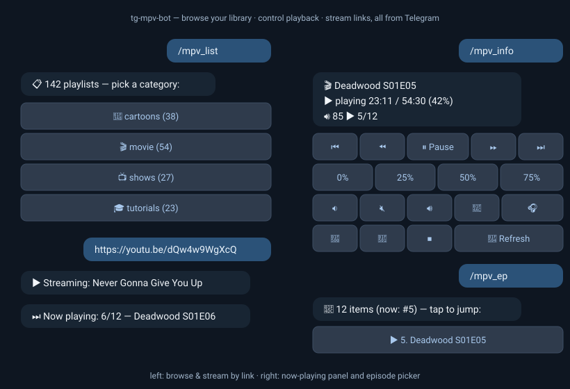

Your TV's remote is now Telegram
A bot that turns any Linux box plugged into a TV into an mpv-powered media center you control from the couch — or the other side of the world. No port forwarding, no VPN, no smart-TV apps — it only makes outbound connections.
on the planet
X11 / Wayland session
nothing else installed
Features
Around 40 commands behind a Telegram user-ID allowlist — these are the highlights.
Categories → playlists as inline buttons, full-text search, an episode picker and chapter jumps.
Send a YouTube / SoundCloud / any yt-dlp URL — it plays on the TV, subtitles fetched automatically.
/mpv_yt lofi beats — top results with thumbnails, tap one to play.
Any Telegram video plays on the TV — up to 2 GB with a local Bot API server.
One now-playing panel: pause, seek, %-jump, volume, speed, audio & subtitle tracks.
Capture what's playing to an H.264 mp4, or the radio to a voice message, and get it right in the chat — tap once to start, again to stop.
Last 20 played, paginated. Tap the title to replay (streams resume from the saved position), tap the icon to copy the URL/path, tap 🗑 to remove the entry.
"⏭ Now playing: 6/12" on episode change, "✅ Finished" at the end. /mpv_sleep 45m for bedtime.
The full SomaFM catalog and friends as presets, plus search across ~50k stations — tuned in about a second.
/mpv_iptv BBC searches 50 000+ channels from the iptv-org catalogue — tap a result to stream live on the TV.
Auto-updating yt-dlp, playlist doctor & repair, disk GC, one-screen health check.

# needs uv → https://docs.astral.sh/uv/
git clone https://github.com/antlis/tg-mpv-bot
cd tg-mpv-bot && uv sync
cp .env.example .env # BOT_TOKEN + ALLOWED_USERS
set -a; source .env; set +a
uv run bot.pyyay -S tg-mpv-bot-git
install -m600 /usr/share/doc/tg-mpv-bot/env.example \
~/.config/tg-mpv-bot.env
$EDITOR ~/.config/tg-mpv-bot.env
systemctl --user enable --now tg-mpv-botdocker pull ghcr.io/antlis/tg-mpv-bot:latest
# host networking + X11 bind mounts —
# see docker-compose.yml in the repompv runs inside the container and renders onto the host's X11 display — GPU passthrough, audio socket ownership and window-focus glue all have sharp edges worth reading before you debug them the hard way: see Docker gotchas in the README.
Commands
Every command the bot understands — plus two that aren't commands at all: just send a link or a video file.
Browse & play
/mpv_list/mpv_play <query>/mpv works too)/mpv_search [cat] <text>/mpv_random [category]/mpv_last/historyStreaming & files
(send a link)(send a video file)/mpv_url <link>/mpv_yt <search>/mpv_radio [search]/mpv_iptv [search]Transport
/mpv_info/mpv_toggle/mpv_pause, /mpv_unpause)/mpv_fwd · /mpv_back/mpv_goto <pos>1:23:45, 90 (s) or 75%/mpv_speed [x]1.5/mpv_quitPlaylist navigation
/mpv_next · /mpv_prev/mpv_ep [n]/mpv_chapters/mpv_shuffle/mpv_loopSound & subtitles
/mpv_volup · /mpv_voldown/mpv_mute to silence)/mpv_audio/mpv_sub/mpv_sub_toggle to hide)/mpv_nightComfort
/mpv_sleep <time>45m / 1.5h (off cancels)/mpv_notify/mpv_shot/mpv_recordLibrary & maintenance
/mpv_scan/mpv_doctor/mpv_fix/mpv_health/mpv_update_ytdlp/help